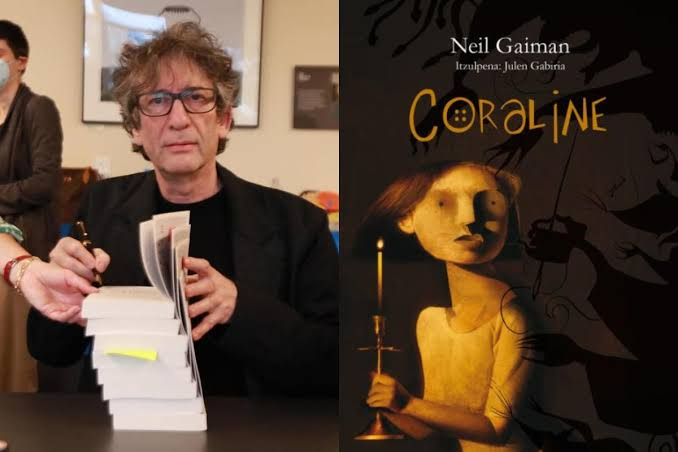

Origen literario: novela de Neil Gaiman (2002).
Adaptación al cine: Henry Selick (2009).
Producción en Laika Studios: sets artesanales y marionetas.
| Aspecto | Novela (2002) | Película (2009) |
|---|---|---|
| Año | 2002 | 2009 |
| Autor/Director | Neil Gaiman (autor) | Henry Selick (director) |
| Estilo | Fantasía oscura, más psicológica | Stop-motion visual, atmósfera artística |
| Diferencias | Enfoque en el miedo interno y psicológico | Énfasis en lo visual, escenarios artesanales y estética única |
